Welcome
Hi! I'm Safiya, and this is my student travel blog documenting my trip to California. This site was made from scratch with HTML and CSS for my class: LIS 351. 💻🚆✈️
Here, you'll find itineraries, numerous tips, my favorite destinations, and my culinary adventures while I was in and around SAN FRANCISCO 🌉⛰️🌲🌊🌁.
As a college student, I once believed that traveling to new states and seeing the country was something only people with plenty of money or free time could do. But over the past few years, I’ve visited more than twenty states across the U.S., and I’ve realized that exploring isn’t as out of reach as it seems. From major cities full of culture and art to quiet forests, snowy mountains, and coastal sunsets, each place has its own rhythm and beauty. Every trip taught me something new—about people, animals, weather, and how different yet connected our country really is.
What surprised me most was how possible it all became once I started planning creatively. Traveling on a budget doesn’t mean missing out; it means learning to make the most of what’s around you—whether that’s car camping, staying in cheap Airbnbs, or using student discounts and travel apps. I made this site to show other students that adventure isn’t limited by money. With the right tools and mindset, anyone can build amazing experiences and plan smarter trips using websites and services that make travel more efficient, detailed, and far from mediocre.
New to web development? The tutorials on MDN Web Docs: Learn Web Development are a great starting point.
What You'll Find
- Destinations in California I’ve visited and why they stood out 🌟
- Student-friendly travel tips (budgeting, food, lodging) 💵🏨
- Common food themes and the importance of exploring land less travelled ✈️🍛
Featured Photos
 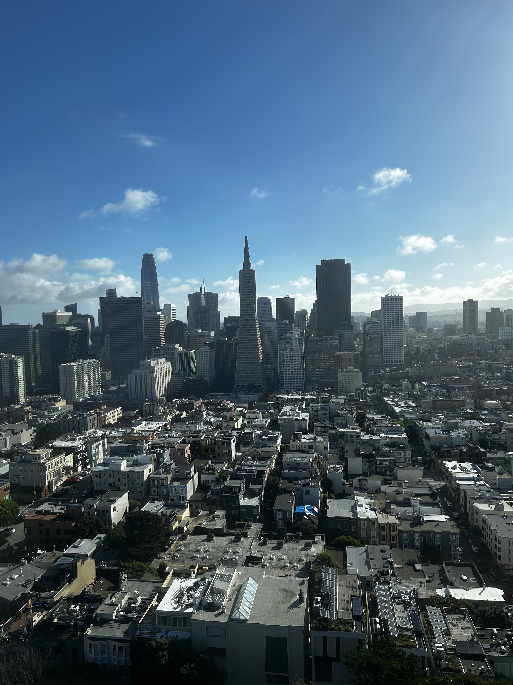
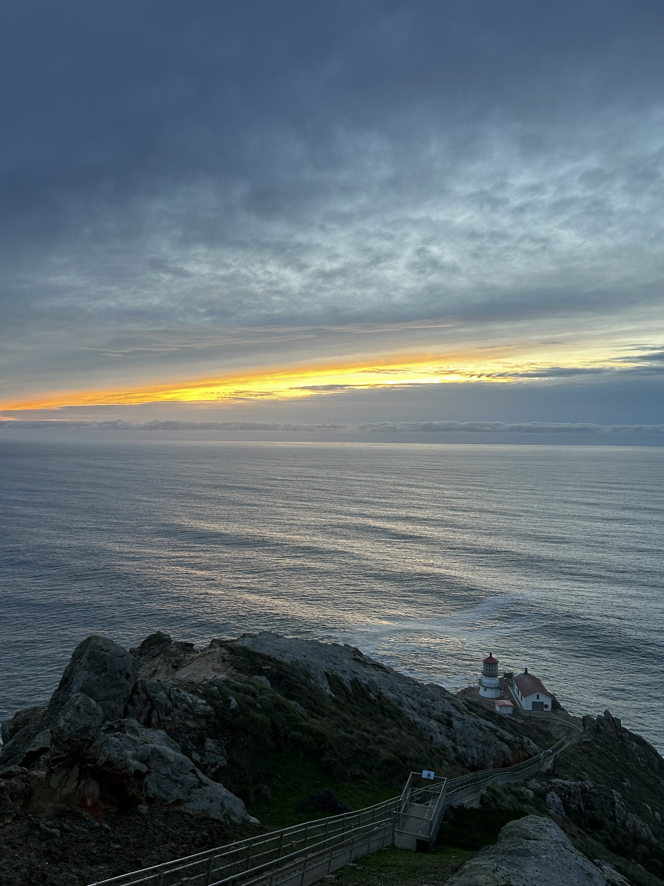
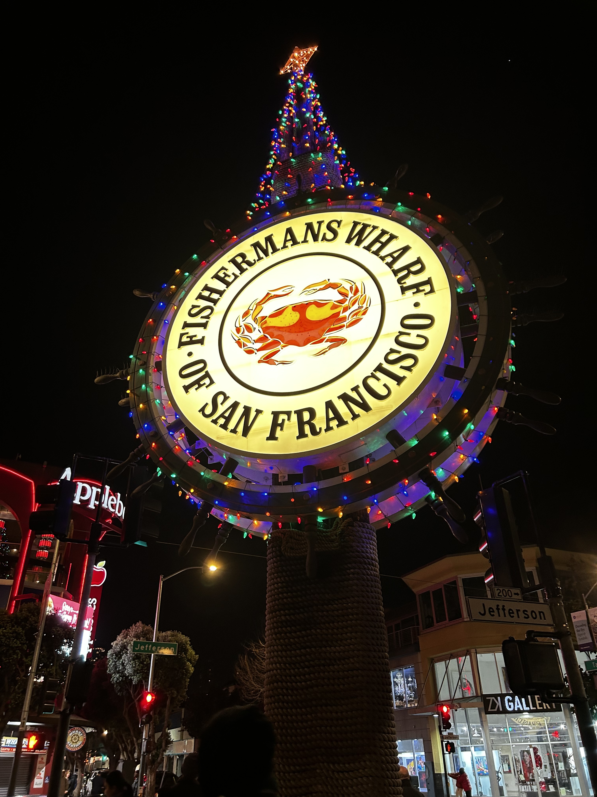
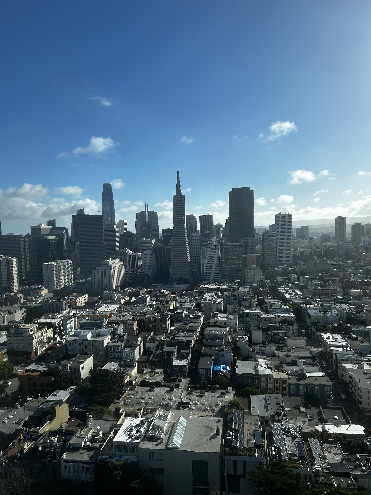
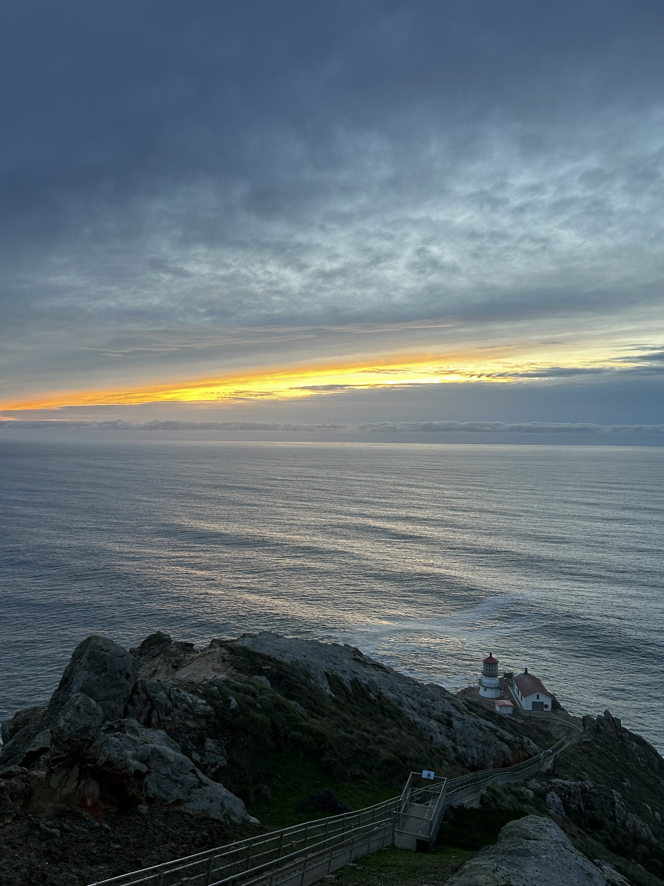
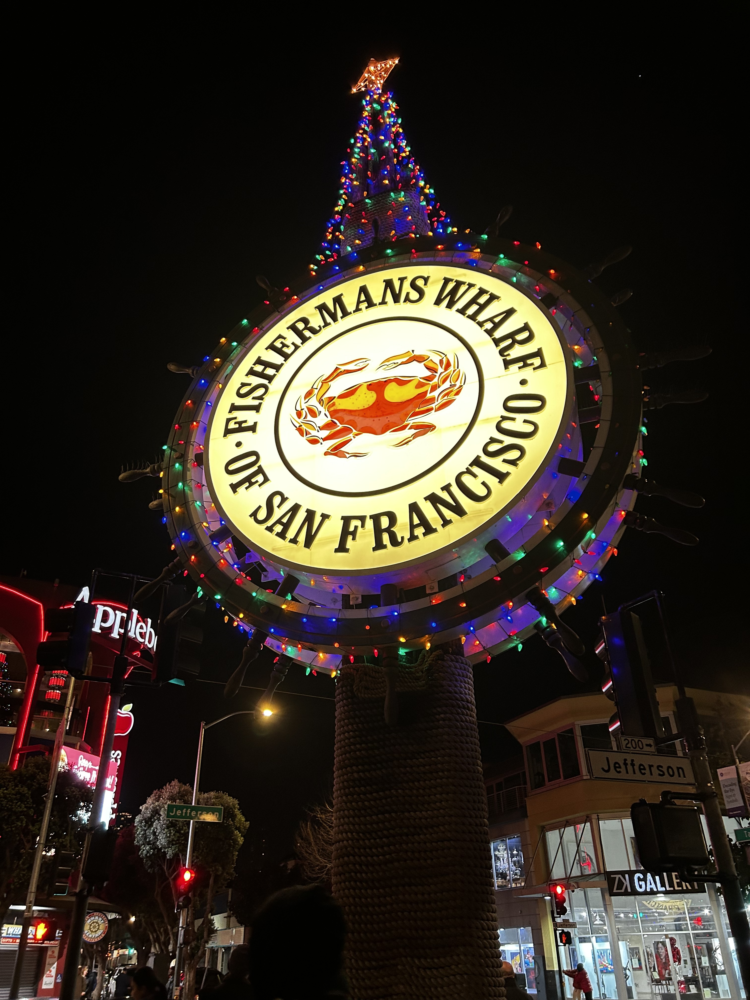

 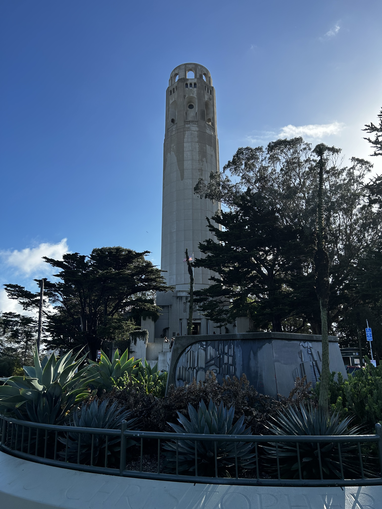
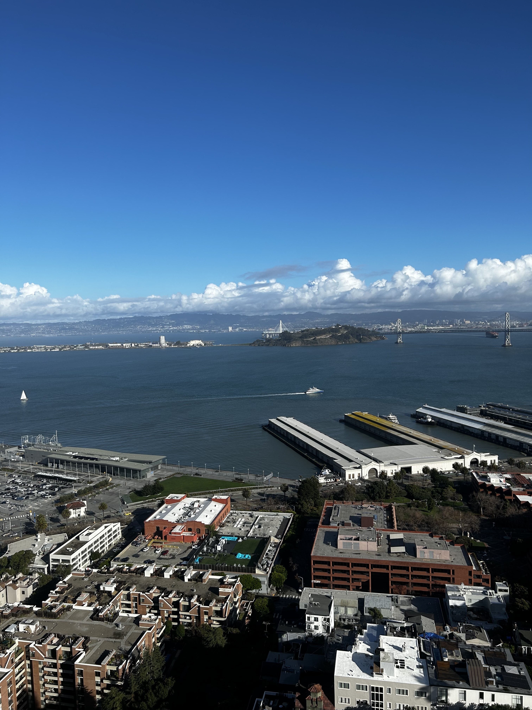
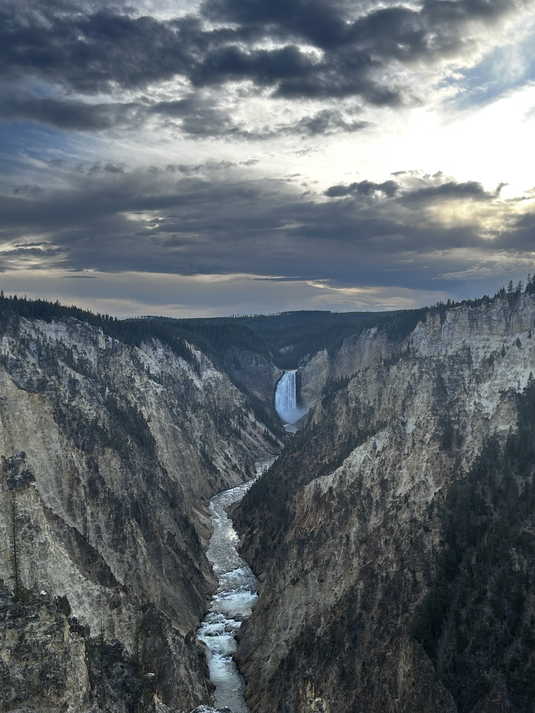
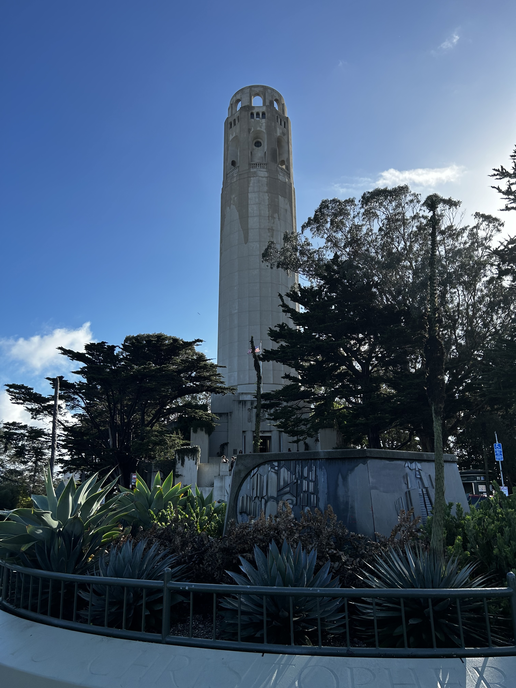
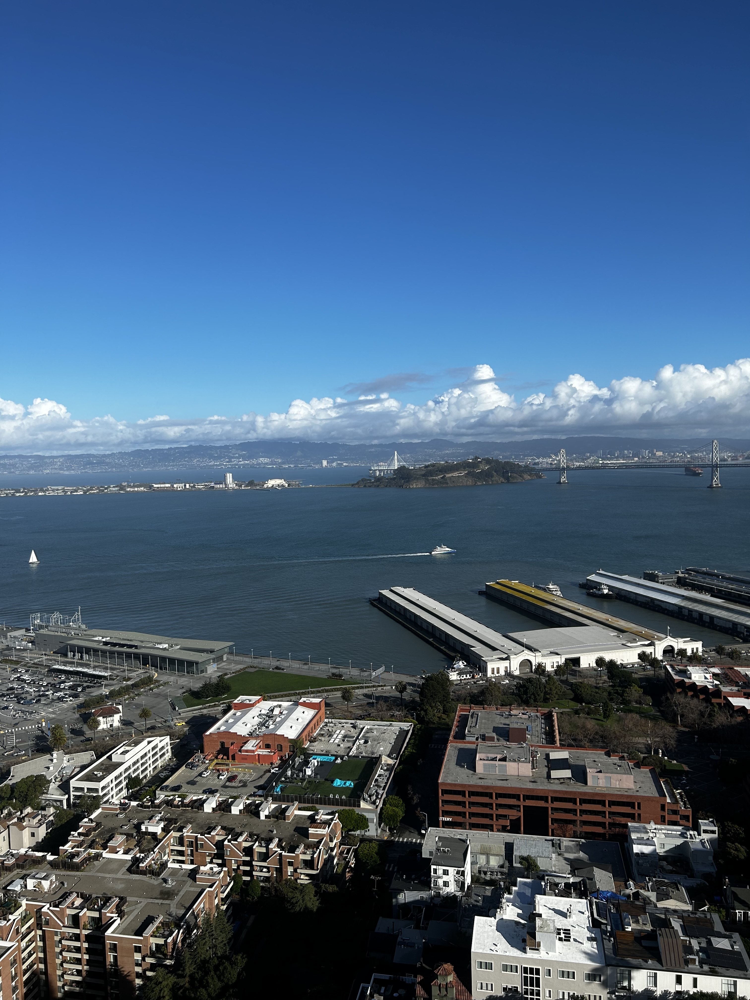
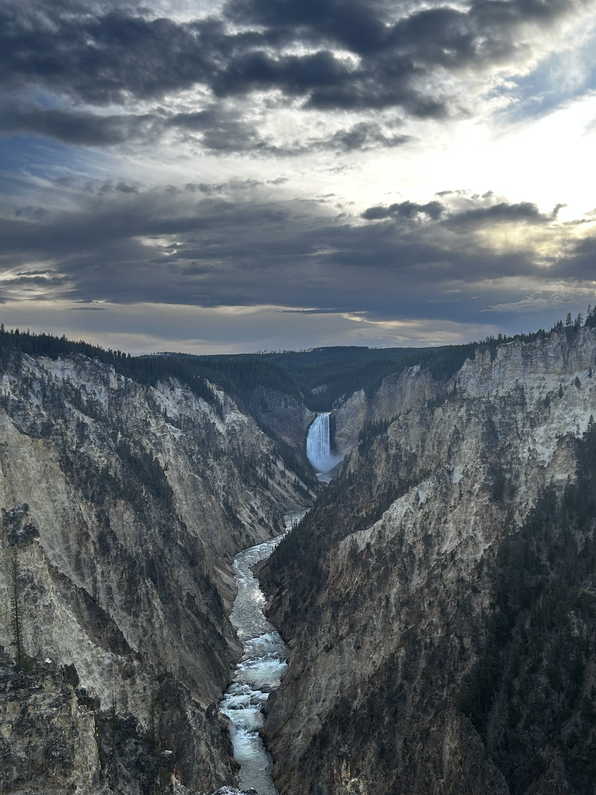